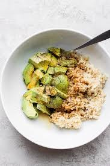

Lunch
Pasta

Ingredients
- Any shape of pasta
- 8 cups of water
- Pinch of salt
- Desired sauce
- Desired toppings (chicken, vegetables, etc..)
Directions
- Put the pinch of salt and 8 cups of water into a pot and bring to a boil
- Once boiled, pour pasta into pot and cook for 5-10 minutes (until fully cooked)
- Drain pasta, add desired sauces and toppings, and enjoy
Microwavable Rice Bowl

Ingredients
- Instant Rice
- Any desired toppings
Directions
- Follow instant rice cooking instructions
- Once the rice is cooked, place toppings on top of the rice
- Enjoy your rice bowl!
Grilled Cheese

Ingredients
- Sliced bread of your choice
- Sliced cheese of your choice
- Butter
Directions
- Place the butter onto a pan that it sitting on low to medium heat
- Put your desired cheeses between two slices of bread and place onto the pan once the butter has fully melted
- Once the cheese begins to melt and the side face down turns golden brown, flip it over
- Cook until both sides are golden brown
- Take the grilled cheese off of the pan and enjoy!